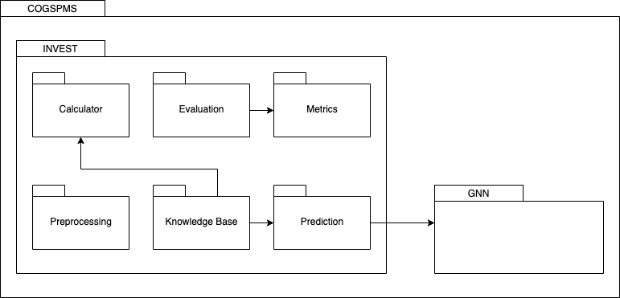

Semantic Bayesian Networks
Background & Context
Portfolio management is a complex decision-making process that aims to maximise return through the proportional allocation of investable capital into identified financial securities. The initial share evaluation phase involves identifying securities with suitable characteristics for inclusion in a portfolio. Portfolio selection is the successive phase of portfolio management and determines the optimal allocation of the set of identified shares in a portfolio. The stock market is a dynamic, non-linear and chaotic system. This requires investment professionals to assess and evaluate multiple factors, including contradictory information when deciding whether a share is suitable for inclusion in an investment portfolio. Intelligent systems incorporate Artificial Intelligence (AI) techniques to automate tasks and support human decision-making.
The INVEST system, proposed by Drake, is one such intelligence system that incorporates ontologies and Bayesian networks to support decision-making for share evaluation on the Johannesburg Stock Exchange (JSE). Ontologies are used to formally encode unstructured expert information into a representative, machine-understandable form, whilst Bayesian networks (BNs) are useful in the financial domain as it represents uncertain, ambiguous or incomplete knowledge.
In this research, we will empirically evaluate the INVEST system with varying conditions and test several system extensions. Firstly, we will evaluate the base INVEST system as designed by Drake. Secondly, we will conduct an ablation study to assess the relative importance of each component in the overall framework. Thirdly, we will extend the system to include systematic risk within the BN topology. Fourthly, we will test the stability and robustness of the INVEST system through a noise simulation component. Finally, we will integrate a deep learning predictive component into the INVEST system.
System Design
The system is composed of six submodules within the INVEST module. The package diagram on the left depicts the dependencies between modules.
- INVEST: This module contains a Store class, which represents the central point of the system. Responsibilities include invoking the functionality of the 6 submodules and running different experiments dependent on user input.
- Preprocessing: This submodule contains data loading and preprocessing utilities. Furthermore, this component has been extended to include a noise simulation component to facilitate system stress tests.
- Calculator: This submodule performs the financial calculations of the system for each company, using financial ratios computation and thresholding logic. Financial ratios produce a numerical output, which the threshold component subsequently converts to discrete states required as input for the BNs.
- Networks: This submodule contains the implementation of three decision networks used to reach an investment decision: Value Evaluation, Quality Evaluation, and Investment Recommendation. These BNs conduct inference using the evidence returned by the thresholding component.
- Evaluation: The INVEST system is evaluated through back-testing using historical data for shares listed on the JSE. This submodule contains the validation procedures and depends on a Metrics submodule that houses risk and risk-adjusted return metrics.
- Metrics: This submodule contains the logic to determine portfolio performance, which is calculated using risk and risk-adjusted return metrics.
- Prediction: This component includes logic to facilitate the integration of a Graph Neural Network (GNN) with the BNs. Prediction is performed based on the close price data of each share.
Bayesian Networks
The Value Evaluation network is used to evaluate a share relative to price and determines whether a share is Cheap, FairValue or Expensive. The Quality Evaluation network is used to evaluate the quality of a share and determines whether a share is of a Low, Medium or High quality. Finally, The Investment Recommendation network incorporates the output of the Quality and Value BNs to reflect the decision process performed by investors: evaluating whether the price of a share is reasonable and the quality of the share, thus providing an investment recommendation for a specific share. This network produces a final Yes or No decision pertaining to system's assessment of the share's suitability for investment.
Experimental Design
The dataset used consists of price and fundamental data for 36 shares listed on the JSE between 2012 - 2018: 17 shares from the General Industrials sector and 19 shares from the Consumer Services sector. The JSE All-Share Index, General Industrials (JGIND) and Consumer Services (JCSEV) are the selected benchmark indices to validate the share evaluation recommendations for the respective sectors. The benchmark dataset includes FTSE/JSE General Industrials index data, FTSE/JSE Consumer Services index data, as well as the FTSE/JSE All Share index data.
Implementation
 Python, a general-purpose programming language is the selected
development platform for the system. The PyAgrum library
is used to create and manage Bayesian networks, given its ability to
perform efficient computations. Furthermore, a visualization web
console was developed using a Flask server and
React. This provides the user an opportunity to select
different experiments, and obtain a graphical view of the results in
comparison to the relative benchmark.
Python, a general-purpose programming language is the selected
development platform for the system. The PyAgrum library
is used to create and manage Bayesian networks, given its ability to
perform efficient computations. Furthermore, a visualization web
console was developed using a Flask server and
React. This provides the user an opportunity to select
different experiments, and obtain a graphical view of the results in
comparison to the relative benchmark.